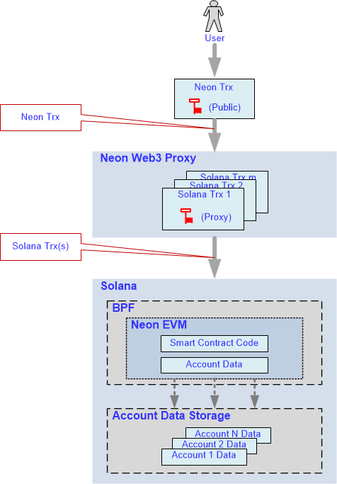
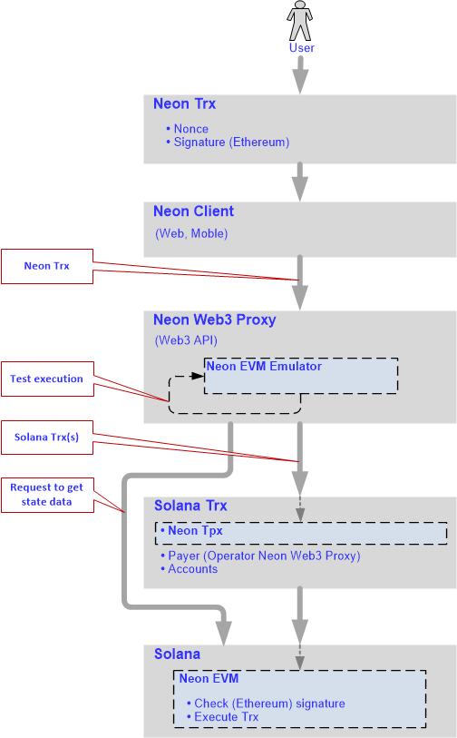

Ethereum and Solana capabilities in a single solution
This section describes a unique solution that allows Ethereum users to use the key features of Solana and vice versa.
Terminology
- BPF - the Berkley Packet Filter virtual machine
- Contract - smart contract
- dApp(s) - decentralized application(s)
- N-trx - Neon transaction formed according to the Ethereum network rules and executed inside Neon EVM
- EVM - the Ethereum Virtual Machine
- Proxy - Neon Web3 Proxy
- S-trx - transaction formed according to the Solana network rules
Key Ethereum capabilities
Ethereum’s core innovation, EVM, is a Turing-complete software that runs on the Ethereum network. EVM enables developers to build and deploy dApps, making the process of creating blockchain applications much easier and efficient. Contracts are treated as autonomous scripts or stateful dApps that are stored in the Ethereum blockchain for execution by the EVM at a later stage.
Ethereum has a large number of developer tools (such as Metamask, Remix, Truffle, and others) available in its ecosystem. The toolkit allows users to write dApps in Solidity: the standard language for development of contracts.
Ethereum is the flagship of the crypto world. It runs a lot of distributed applications that have proven themselves in the market and are in demand all over the world.
Key Solana capabilities
Solana is an exceptionally fast, secure, and relatively inexpensive blockchain network.
The Solana blockchain provides:
- High performance, including:
- Short block processing time.
- Processing of many transactions per second (transactions can be executed in parallel).
- Low transaction fees.
- Ability to increase the number of nodes in the network without reducing the performance of the network as a whole.
- Capability to build in coding languages C, C++, Rust.
Goal
To find a solution that combines the best of both Ethereum and Solana and allows:
- Solana users to use unique Ethereum toolkits to write dApps in Solidity.
- Ethereum dApps to be deployed on Solana, thereby attracting a huge audience of Ethereum users to the Solana blockchain.
- Ethereum users to significantly increase the speed of transactions and reduce the fee charged for their execution by using Solana.
Solution implemented
To achieve the goal, the following solution was proposed and implemented by the NeonLabs development team:
- EVM was integrated in Solana and named Neon EVM: an emulator implemented using Rust.
- Neon EVM operates inside Solana providing parallel transaction processing and a low transaction fee.
- The Neon Web3 Proxy was created to mediate interactions between the Ethereum user (account) and the Neon EVM; the main function of the proxy is to provide an API for external clients.
Solution in detail
The block diagram of the solution is shown in Fig. 1.

Fig. 1
Berkeley Packet Filter
The BPF virtual machine is installed in Solana, allowing developers to embed other virtual machines inside Solana.
Using BPF capabilities, a contract called Neon EVM was created in Solana, inside of which the EVM was loaded.
Because Solana has a contract update mechanism, the Neon EVM contract can also be updated independently of updates of the Solana node itself. This allows developers to update EVM versions without updating all the blockchain nodes.
Neon Web3 Proxy
A user is allowed to form transactions under an Ethereum account and sign them with a public key generated in Ethereum. Transactions formed according to Ethereum rules are sent to the input of the Proxy component. This component converts N-trxs into transactions under Solana rules.
The size of N-trx can exceed that of S-trx. Also, the amount of resources that a S-trx can spend is limited. Converting a transaction in a one-to-one format is difficult due to the possible lack of resources. Therefore, it was decided to generate multiple S-trxs for one N-trx. Each transaction generated is signed with a proxy key. The proxy sends the generated batch of transactions to Solana.
Web3 API
The proxy provides the full Web3 API to interact with external clients. In Ethereum, some contracts work at the blockchain level, and there is also an API that is supported by an Ethereum node. Clients that are created for Ethereum contracts support standard interfaces. For a client (i.e. Metamask, Remix) to work in a web browser, it must work via the Web3 API. With Neon EVM, Ethereum dApps can be deployed on Solana without any edits to the source code or recompilation: dApps look and function exactly the same.
Clients will work on a different blockchain if they are provided with the same interface. You can do this by changing the address where these clients need to go. Ethereum contracts and clients do not need to be rewritten to work in Solana, you just need to register the proxy address. Any client can run a proxy to deploy a contract inside Solana. The interface that the clients interact with will be the same as for dApps running on Ethereum.
Neon EVM
Solana runs BPF, inside of which runs Neon EVM. Neon EVM is a Solana contract, so it recognizes the transaction format from the received batch. Neon EVM extracts data from each transaction and thus can retrieve all the original user information placed in the transaction.
Neon EVM also validates the signature that is in the transaction. If the signature is authentic, Neon EVM takes the contract code to which this transaction is addressed and starts to execute it. As soon as the contract code has been executed successfully, Neon EVM records a new state.
For example, if the transaction is a token transfer, the contract code sends tokens from one account to another. Neon EVM simply records this new state.
The user can also form a transaction to load a contract inside Neon EVM. In this case, the contract code will be written for Ethereum. A bytecode of this contract code will be loaded inside Neon EVM. That is, the contract itself and its data will be stored inside Solana.
Account data storage
Solana stores account data. Neon EVM has access to this storage and uses the account data. After registering an account in Solana, the account data is placed in this storage. Ethereum accounts are also stored here but in the Solana representation. For each Ethereum address, there is a corresponding account in the Solana representation. A contract code is placed in a corresponding account of this storage.
Neon EVM interacts with a set of data that is stored on Solana's accounts. Neon EVM can take a contract code from there using the corresponding account address to validate a transaction. Neon EVM contains a virtual machine inside it that runs according to Ethereum rules.
How Neon works
A user calls a client that generates a transaction and sends it to the proxy, inside which the Neon EVM emulator runs (Fig. 2). The transaction is formed in accordance with the Ethereum rules and contains mandatory fields, including:
- Nonce: number of transactions sent from the current address.
- Signature: generated in accordance with the Ethereum rules.
- Gas price: fee the sender pays per unit of gas.
- Gas limit: maximum amount of gas units that can be consumed by the transaction.
- Value: amount of coins to transfer from sender to a recipient.
- Recipient: address of the recipient.

Fig. 2
To perform this transaction, the Neon EVM emulator makes a request to Solana to get state data. The proxy requests a blockchain state from Solana and makes a test launch of N-trx using the Solana state. On the basis of the data received, Proxy forms the new transaction according to Solana's rules. The transaction generated for Solana will contain the packaged N-trx, as well as the account data required to complete the transaction, including:
- Payer (the account that pays for the transaction).
- Other accounts involved in the execution of this transaction.
Next, the transaction is forwarded inside Solana, where participants of the transaction are determined according to the account data. The data added includes details about people who initiate and take part in processing the transaction. The operator of the proxy is specified as the payer. The payer will be rewarded for completing the transaction.
Next, the transaction is transferred to Neon EVM, where its signature is checked according to Ethereum rules. If the signature is valid, the transaction will be transferred to the Solana blockchain for execution. Since testing of N-trx is carried out, it is possible to provide Solana with all the necessary information to run the execution of the N-trx in parallel.
Conclusion
Neon's solution offers:
- No changes or additional resources are required to implement dApps on Solana.
- No need to rewrite clients for all existing dApps, since the Ethereum node interface remains unchanged, and therefore clients can run on the Solana node also without changes.
- No need to rewrite contracts for existing dApps.
- Solana developers are given the opportunity to:
- Use a unique toolkit created for Ethereum.
- Create and deploy their contracts on the Solana network.
- Unlike Ethereum, the Neon EVM can be updated at any time, this means that new functionality can be added at any time and code updates can take place simply by uploading them as a new smart contract.